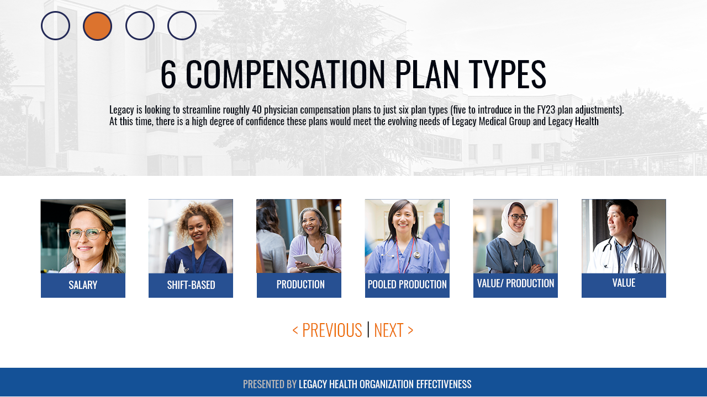
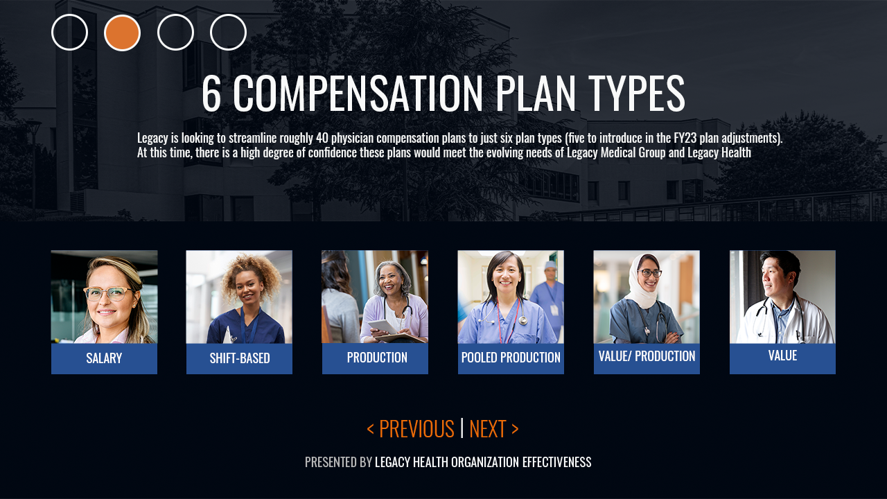
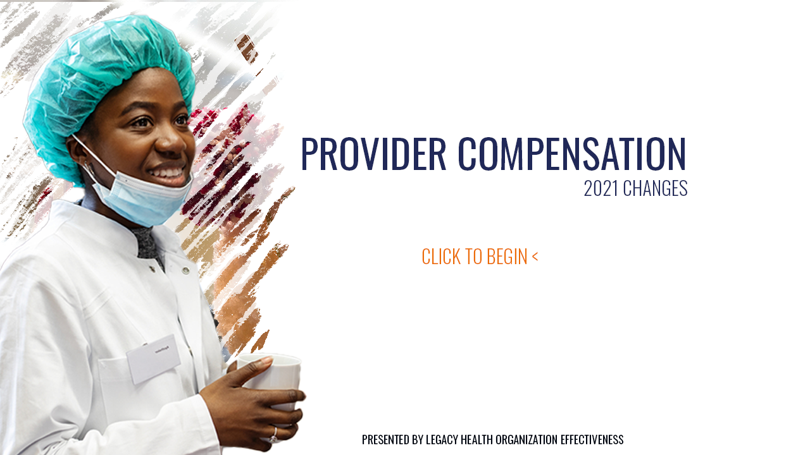
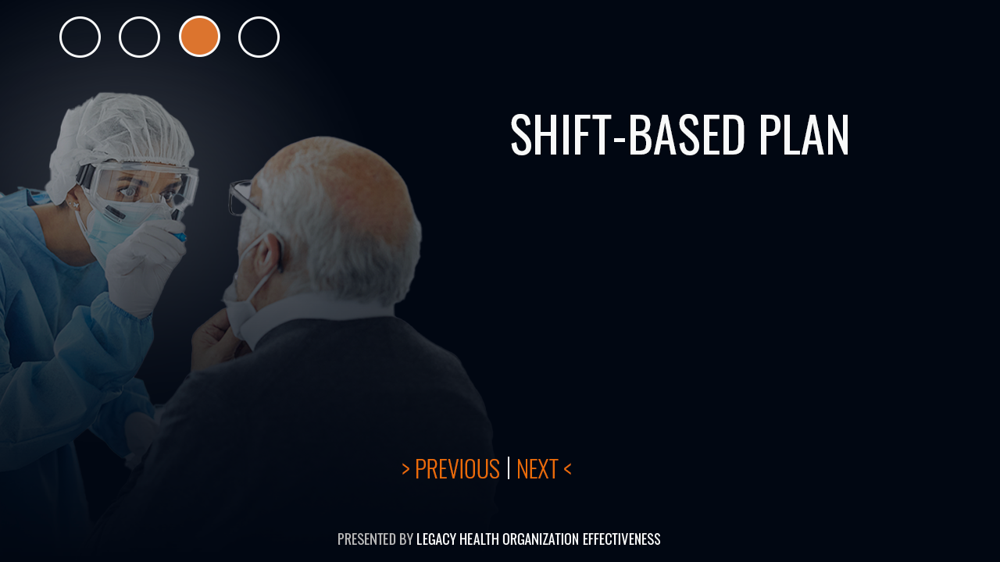

At Legacy Health, I partnered with clinical leaders, healthcare subject matter experts, and operational teams to design learning experiences that supported workforce readiness, clinical safety, and organizational performance across a large regional health system serving more than 12,000 employees.
The work spanned a wide range of initiatives, from provider education and operational improvement to COVID-19 response training developed during one of healthcare's most challenging periods. Learning experiences addressed topics including infection prevention, personal protective equipment (PPE), clinical workflows, Epic EHR, provider compensation, and LEAN healthcare principles. Each program was designed to help clinicians and staff quickly understand evolving guidance, build confidence in new procedures, and apply critical knowledge in high-stakes environments where accuracy and consistency directly affected patient care.
The examples below represent a selection of the learning experiences, instructional materials, and multimedia assets developed to support Legacy Health's broader workforce capability and operational readiness initiatives.




Related Case Study
Healthcare Training Under COVID Constraints
A 12,000+ employee health system needed urgent digital-first training when classroom delivery was not possible.